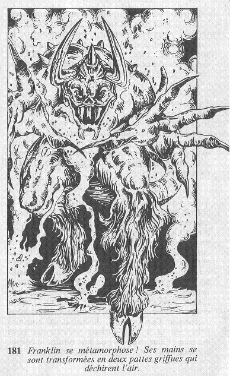

Le majordome braille lorsque vous lui assénez un premier coup. Cet homme n'est apparemment pas habitué à la violence car son cri d'agonie est disproportionné par rapport au modeste coup que vous lui avez porté. Son hurlement se poursuit, et devient de plus en plus strident, à tel point que vous reculez en vous bouchant les oreilles. Mais ce n'est pas la douleur qui le fait hurler ainsi... Des vapeurs commencent à s'élever du sol et à envelopper l'homme, et son hurlement se transforme en rugissement tandis que ses yeux s'agrandissent démesurément. Il se métamorphose ! Devant vous, Franklin est en train de se dissoudre pour donner naissance à une forme diabolique... Des fumées jaillissent de sa gueule, et sa peau se recouvre d'écaillés noirâtres. Ses mains se sont transformées en deux pattes griffues qui déchirent l'air, ses pieds sont maintenant des pattes de bouc.  Vous ajoutez 3 points à votre total de PEUR pour être le témoin de la naissance de ce démon surgi des profondeurs de l'enfer. Si vous êtes toujours en vie, et si vous possédez le Kriss, rendez-vous ici. Si vous ne possédez pas le Poignard Malais, rendez-vous à cet endroit.